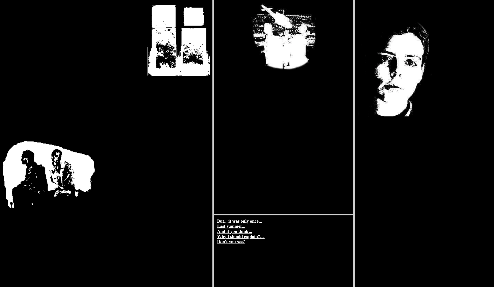
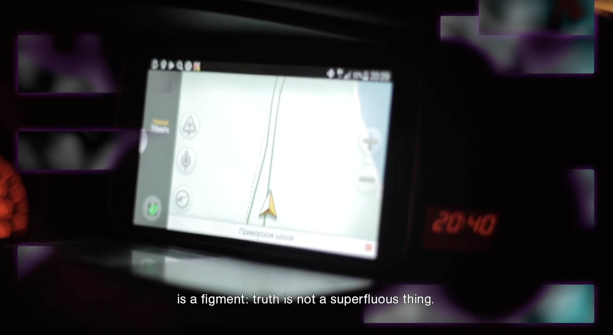

UNIVERSALITY OF TRUTH
"He believed in an infinite series of times, in a growing, dizzying net of divergent, convergent and parallel times.
This network of times (...) embraces all posibilities of time."2
THE PROBLEMATIC OF THE FALSE
SIMULATED REALITY
"It is then possible to argue that, if this were the case,
we would be rational to think that we are likely among the
simulated minds rather than among the original biological ones."1
 BRANCHING AS A BUILDER
BRANCHING AS A BUILDER
"(...) it is always possible to predict all future states.
(...), as described by the positions and velocities of all particles, it should be possible to predict all future states.3"
INFINITE DIVERGENT NARRATIVES

REAL VS DIGITAL: THE IMITATION GAME
“Can machines think? This should begin with definitions
of the meaning of the terms “machine” and “think.”3
“It there a corresponding phenomenon for minds,
and is there one for machines?"3

To understand the relation between human and machine, we have to
consider time and space. The Garden of Forking Paths by Borges builds up
an analogy on how to create and generate different narratives outcomes,
just like Turing did with Computing Machinery and Intelligence: a branching system where all concepts cross and fork. A system that stores it all together as
a cloud of branching universes.
References:
1 The Simulation Argument (2003), Nick Bostrom Faculty of Philosophy, Oxford University. Published in Philosophical Quarterly (2003) Vol. 53, No. 211, pp. 243-255;
2 BORGES, Jorge Luís (1941), The Garden of Forking Paths.
Editorial Sur, Argentina;
3 TURING, Alan (1950), Computing Machinery and Intelligence;
4 Quote from Olia Lialina’s project My Boyfriend Came back from the War (1996);
1. Lil Miquela (2016-present), Brud company (Sarah DeCou and Trevor Fedries). Computer-generated and digital art project;
2. F for Fake (1973). Directed by O. Welles. France: Planfilm Specialty Films. (movie/documentary)
3. Information Skies (2016), Metaheaven (Daniel van der Velden and Vinca Kruk). Rotterdam/Amsterdam. Colour panel (24min), Hungarian with english
and korean subtitles;
4. My Boyfriend Came back from the War (1996), Olia Lialina. Russia. Browser-based internet Artwork, hypertext-novel: http://www.teleportacia.org/war/;
5. The sprawl: Dream and Reality: Peter Pomerantsev vs Nikolai Berdyaev (2014), Metaheaven (Daniel van der Velden and Vinca Kruk). Rotterdam/Amsterdam: https://www.youtube.com/watch?v=j41aIHkOZLQ;
Mariana Cordeiro, 10251. Mestrado de Design de Comunicação, Projeto I, EX02, Fase 1 - The (Old) New Media.